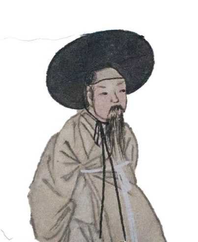
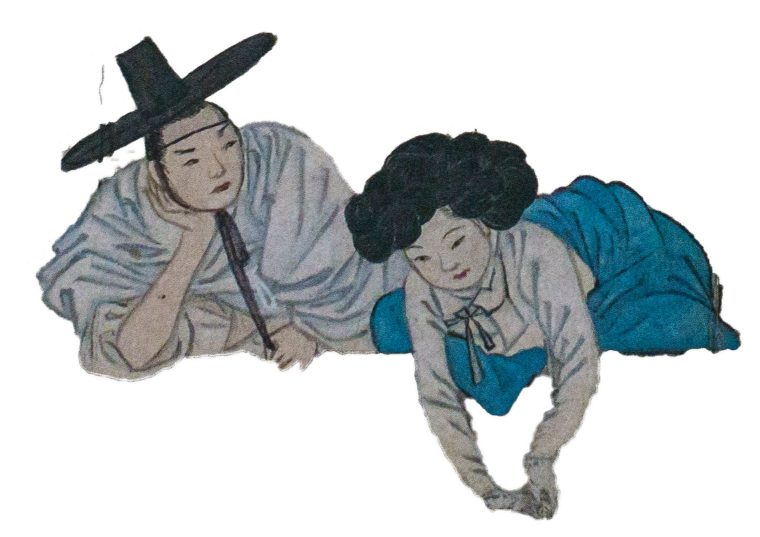
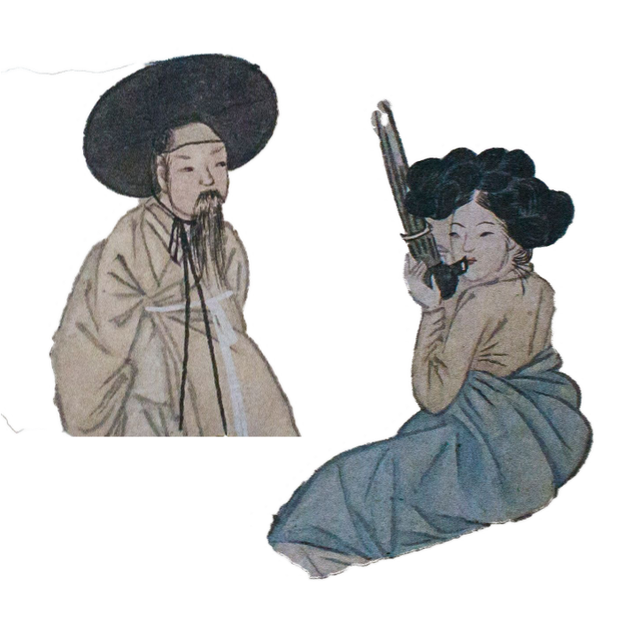

제 1장. 신윤복의 <주유청강>
一笛晩風聽不得,
白鷗飛下浪花前
젓대소리 늦바람으로 들을 수 없고,
백구만 물결 좇아 날아든다.

<주유청강>, 28.2x35.6cm, 종이에 채색, 간송미술관 소장
신윤복은 조선 후기의 풍속화가로,
양반층의 풍류와 남녀 간의 연애, 기녀와 기방을
풍자적, 해학적으로 표현한 것이 특징입니다.
신윤복의 가늘고 유연한 선과 원색의 산뜻하고 따뜻한 색채는
<주유청강>에서도 볼 수 있는데,
<주유청강>은 제목 그대로 양반들이 기생들과 뱃사공, 대금악사를
데리고 한강에서 뱃놀이를 하고 있는
모습을 그린 풍속화입니다.
신윤복의 <주유청강>은 언뜻 보기엔
기녀들과 양반들이 뱃놀이를 하는 장면을 담은 그림으로 보이지만,
그 속엔 어떤 이야기가 들어있을까요?

그림을 자세히 보면,
그림을 자세히 보면,
가운데 서 있는 중년의 남성은 흰
허리띠를 둘러매어 상중의 양반임을
알 수 있습니다.
조선시대에는 부모가 돌아가시면 자식은
삼년상을 치르며 이 기간에는 상복을
입고 끝무렵에는 흰 허리띠를
둘러야했습니다.

이 그림 속 중년의 남성과
이 그림 속 중년의 남성과
그 아래에 턱을 괴고 기녀를
바라보고 있는 어린 양반도
흰 허리띠를 둘러맨 것을 보아,
이 둘은 형제임을 알 수 있죠.

중년의 양반은 다른 양반들과는